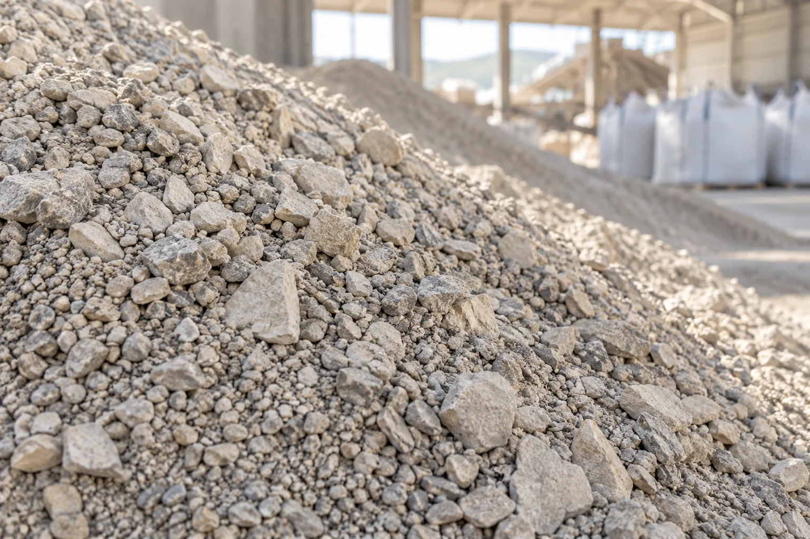
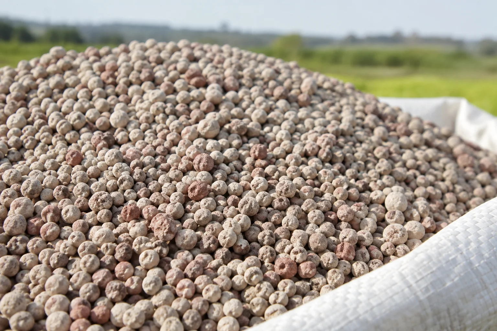
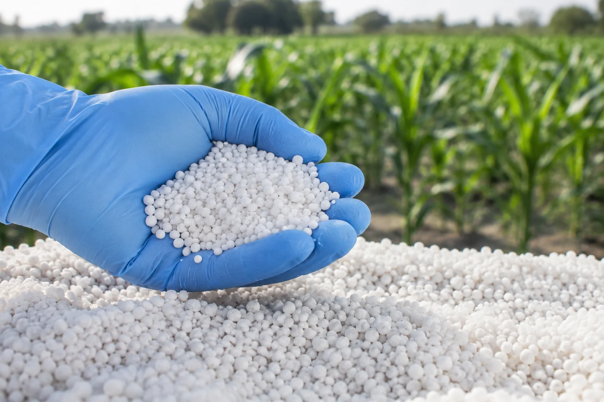
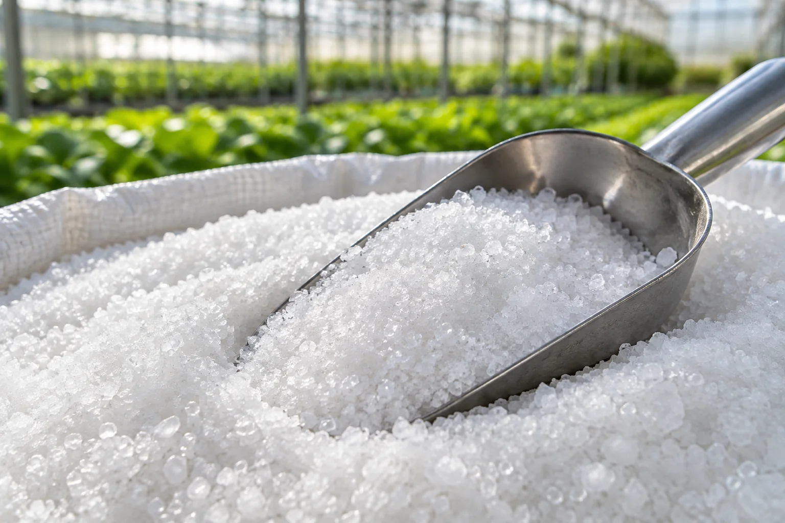

Mielony fosforyt
18-34% P₂O₅
Fosforyt w postaci proszku, również drobno mielonego. Zawartość P₂O₅, pochodzenie i dostępną ilość potwierdzamy dla każdego zapytania.
Dostawy nawozów z wielu źródeł pochodzenia, koordynowane według bieżącej dostępności, specyfikacji, ilości, opakowania, logistyki i wymagań wysyłkowych.
Pobierz katalog



Formy: proszek / granulowane / drobny proszek
18-34% P₂O₅
Fosforyt w postaci proszku, również drobno mielonego. Zawartość P₂O₅, pochodzenie i dostępną ilość potwierdzamy dla każdego zapytania.
Parametry na zapytanie
Granulowany fosforyt dobierany według wymaganej zawartości składników pokarmowych i parametrów fizycznych.
Skład na zapytanie
Dostępność, pochodzenie, specyfikacja, dokumentacja, opakowanie i warunki handlowe są potwierdzane dla każdego kwalifikowanego RFQ i każdej dostawy.
Analiza konkretnej partii
Wybrane gatunki oceniamy na podstawie wyników analiz kadmu i innych metali ciężkich dla danej partii.
GSSP 17% / 19% · GSP 20% · DSP 36% · TSP · DAP · MAP 10-46-0 · NPK
17% P₂O₅
Dostępność, pochodzenie, specyfikacja, dokumentacja, opakowanie i warunki handlowe są potwierdzane dla każdego kwalifikowanego RFQ i każdej dostawy.
19% P₂O₅
Granulowany nawóz fosforowy. Podstawę deklaracji zawartości składników i dostępność potwierdzamy na podstawie specyfikacji dostawcy.
20% P₂O₅
Dostępność, pochodzenie, specyfikacja, dokumentacja, opakowanie i warunki handlowe są potwierdzane dla każdego kwalifikowanego RFQ i każdej dostawy.
36% P₂O₅
Dostępność, pochodzenie, specyfikacja, dokumentacja, opakowanie i warunki handlowe są potwierdzane dla każdego kwalifikowanego RFQ i każdej dostawy.
0-46-0
Dostępność, pochodzenie, specyfikacja, dokumentacja, opakowanie i warunki handlowe są potwierdzane dla każdego kwalifikowanego RFQ i każdej dostawy.
18-46-0
Dostępność, pochodzenie, specyfikacja, dokumentacja, opakowanie i warunki handlowe są potwierdzane dla każdego kwalifikowanego RFQ i każdej dostawy.
10-46-0
Granulowany nawóz fosforanowo-amonowy o deklarowanym składzie 10-46-0. Skład, deklarowane zawartości składników i kryteria odbioru określa specyfikacja wybranego producenta.
Różne formuły
Dostępność, pochodzenie, specyfikacja, dokumentacja, opakowanie i warunki handlowe są potwierdzane dla każdego kwalifikowanego RFQ i każdej dostawy.
Mocznik granulowany 46% N. Parametry potwierdzamy dla konkretnej dostawy.
46% N
Mocznik granulowany klasy rolniczej koordynowany przez kwalifikowane europejskie i międzynarodowe kanały dostaw.
Fosforan monopotasowy (MKP), fosforan mocznika (UP), azotany i wybrane nawozy NPK z mikroelementami.
0-52-34
Rozpuszczalne w wodzie źródło fosforu i potasu do fertygacji i nawożenia dolistnego.
17-44-0
Kwaśny nawóz rozpuszczalny w wodzie, odpowiedni do fertygacji oraz dostarczania fosforu i azotu.
13-0-46
Źródło potasu i azotu azotanowego do fertygacji i nawożenia specjalistycznego.
Mg + N
Rozpuszczalne w wodzie źródło magnezu i azotu do fertygacji i żywienia specjalistycznego.
20-20-20 + TE
Zrównoważony NPK z mikroelementami. Bieżąca dostępność, opcje pochodzenia i warunki handlowe są potwierdzane dla każdego RFQ.
10-52-10 + TE
NPK o wysokiej zawartości fosforu z mikroelementami. Bieżąca dostępność, opcje pochodzenia i warunki handlowe są potwierdzane dla każdego RFQ.
15-5-30 + TE
NPK z przewagą potasu i mikroelementami. Bieżąca dostępność, opcje pochodzenia i warunki handlowe są potwierdzane dla każdego RFQ.
Rodzaje: Zn / Fe / Mn / B / Cu / Mo
6% Fe · EDDHA
Wybrane mikroskładniki dostarczane na zapytanie z dokumentacją dla konkretnej klasy.
15% Zn · EDTA
Wybrane mikroskładniki dostarczane na zapytanie z dokumentacją dla konkretnej klasy.
Mn
Wybrane mikroskładniki dostarczane na zapytanie z dokumentacją dla konkretnej klasy.
B
Wybrane mikroskładniki dostarczane na zapytanie z dokumentacją dla konkretnej klasy.
Cu
Wybrane mikroskładniki dostarczane na zapytanie z dokumentacją dla konkretnej klasy.
Mo
Wybrane mikroskładniki dostarczane na zapytanie z dokumentacją dla konkretnej klasy.
Według wymagań
Wybrane mikroskładniki dostarczane na zapytanie z dokumentacją dla konkretnej klasy.
Przyjmujemy zapytania o wybrane surowce mineralne, kwas fosforowy, chlorek potasu i dodatki do kondycjonowania nawozów. Przed przedstawieniem oferty potwierdzamy źródło i specyfikację.
Przyjmujemy zapytania o pozyskanie tych produktów. Umieszczenie produktu w katalogu nie potwierdza stanu magazynowego, zatwierdzenia dostawcy ani gwarantowanych parametrów. Podaj przeznaczenie i miejsce dostawy, abyśmy mogli dobrać odpowiedni gatunek.
Specyfikacja na zapytanie
Skład mineralny, sposób wyrażenia zawartości wapnia i magnezu, stopień rozdrobnienia i przeznaczenie potwierdzamy dla wybranego źródła.
Specyfikacja na zapytanie
Dla każdego zapytania ustalamy źródło, czystość, wielkość cząstek i przeznaczenie przemysłowe lub rolnicze.
Specyfikacja na zapytanie
Dla każdego zapytania ustalamy sposób wyrażenia stężenia, dopuszczalne zanieczyszczenia, przeznaczenie i odpowiednie warunki dostawy.
Specyfikacja na zapytanie
Przed przedstawieniem oferty sprawdzamy deklarowaną zawartość potasu, zawartość chlorków, postać produktu i przeznaczenie.
Specyfikacja na zapytanie
Powłoki i dodatki kondycjonujące dobieramy do konkretnego nawozu, warunków przeładunku i wymaganych właściwości.
Spróbuj innej nazwy produktu lub prześlij nam swoje wymagania.
Poproś o ofertęW przypadku regularnego zapotrzebowania podaj rynek docelowy, oczekiwany wolumen, preferowane opakowanie, miejsce przeznaczenia i schemat dostaw. Ocenimy odpowiednią strukturę dostaw w oparciu o aktualnie zweryfikowaną dostępność.